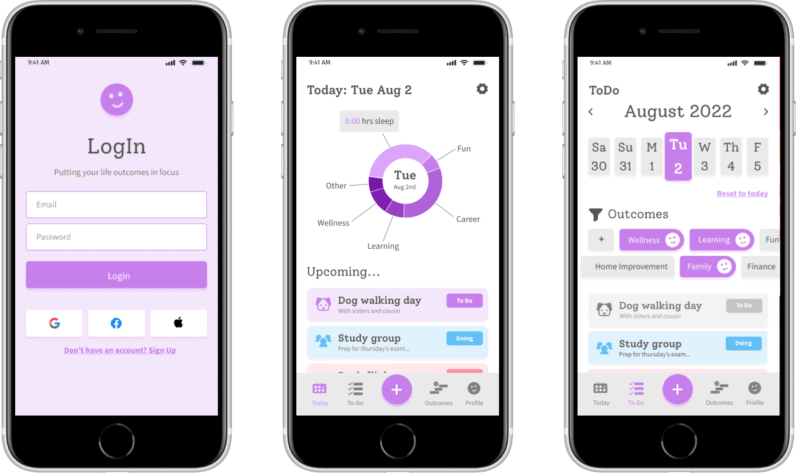
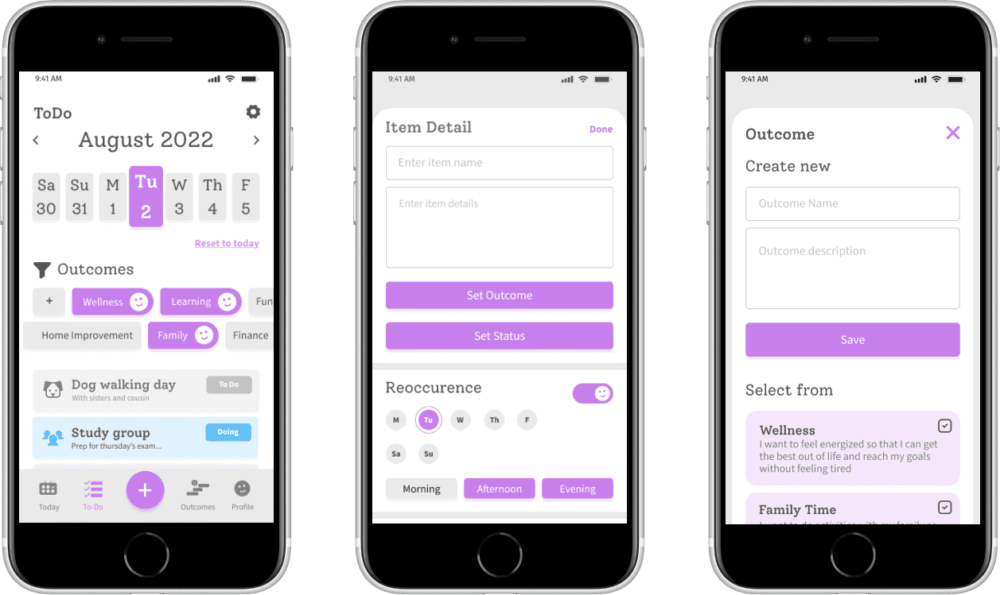
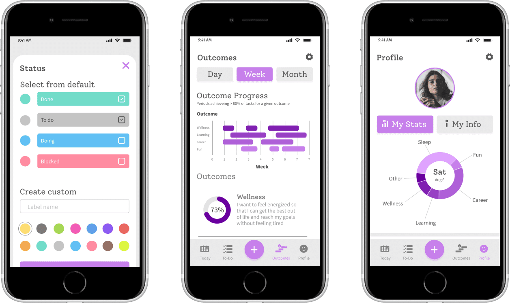
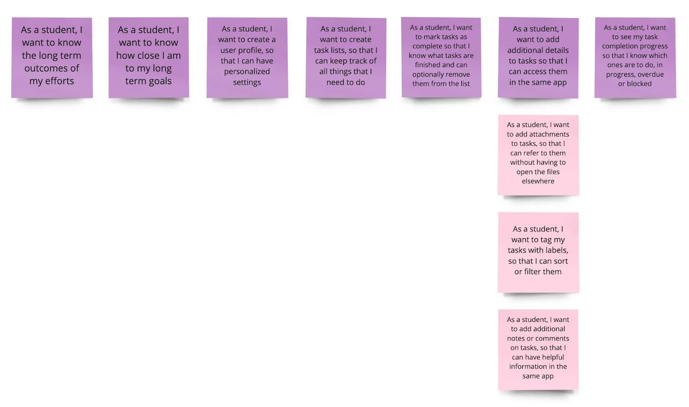
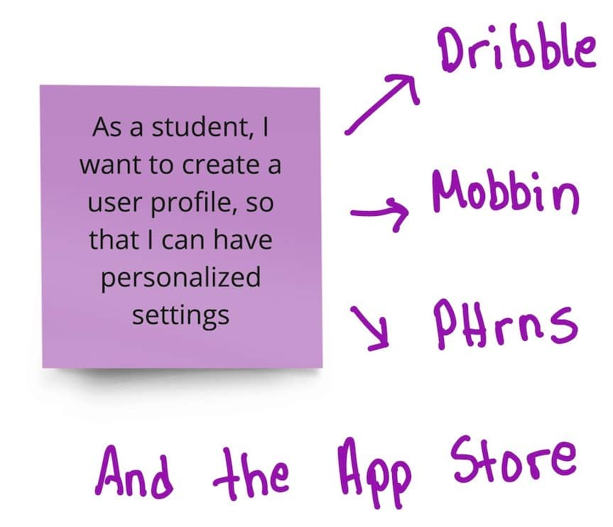
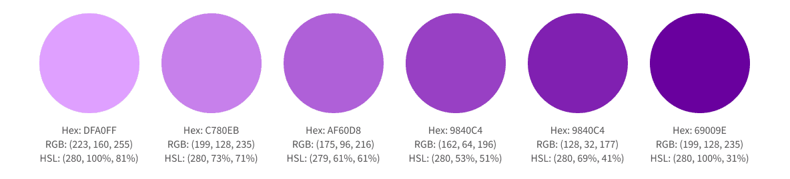
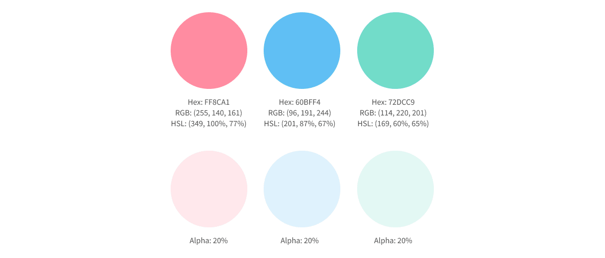
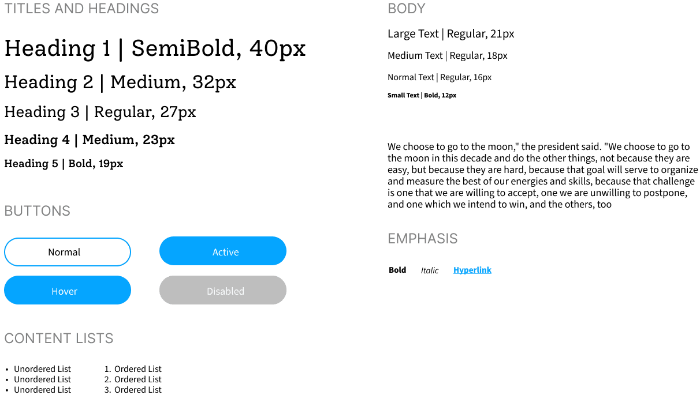

Productivity - User Interface Design
Introduction
The busy student is a person who wants to enjoy life while finding their place in the world. They are motivated by 'purpose' and want to focus on what is most important to them while minimizing distractions.
A different generation
The song "Takin Care of Business' was released in 1974, when the baby boomers were between 12 and 28 years old. This generation is known for their strong work ethic and competitiveness.
However as I observe students today on social media discussing productivity apps, I noticed they place importance on their productivity ‘boundaries’. They want to organize both what 'to do' and what 'not to do'.

What is most important?
This is why the UI differentiates itself by encouraging the user to filter their tasks based on what they value; something that can change from time to time.
The ideal user can organize their tasks by purpose or 'outcome'.
What problem are we trying to solve?
How can we help students focus on what is most important to them? The answer was found through conversations and sketching

Design Decision Mistakes
Some parts of the design began to divert from this original purpose. The decision to use data charts and statistics to communicate insights, was not the best design decision, on my part.
UI Research
Analysis
As an independent developer who was easing back into the design dimension, it was time to take a step back and think in a new way. This started with an analysis of the most frequently used design pattern categories found in a To-Do app:
- Gathering input - on the task name and details
- Data management - to display task lists
- Navigation - to access task status or calendar days
User Stories
Conversations produce great user stories and my main design mistakes came in the later part of the design process where I added features that did not correspond to a user story.
Ideation
Meanwhile each user story supported a thorough search for the best design patterns that would help our users achieve their goals.
Digital Low-Fidelity Wireframes
We piece together the essential screens to confirm the layout, user flows and information architecture at the most basic level.

Low-Fidelity Wireframes with grid
Grid System
I used a 10-pt grid with 6 columns and 20pt margins because, in figma, one can use the shift key to move an element 10pts at a time.

Gray Boxing
How many rectangles did YOU draw today?

Icon Design
Ideation and first sketches
While drawing 3 variations of each icon, looking at my handwriting, I want to ensure the reader that this design was created not only with love but also with a little bit of caffeine.

Design Changes
A clever idea of an icon that symbolized a user profile that also contains statistics.Improvements
An icon set can feel more like a family with consistent line thicknesses, angles, and corner radii
Basic UI components
Conversion to iPhone 8 and Small Android
According to Mobile Screen Resolution Stats Worldwide for June 2021 to June 2022, the most common screen size is the iPhone 8 (375 x 667) and Small Android Small (360 x 840). I therefore converted my artboards to iPhone 8 and adjusted the UI components.
Simplifying design
The current interface was quite dense and heavy so I made some changes, starting with removing the top navigation bar and integrating the user profile into the navigation bar.

Emotional inspiration
Preparation for high-fidelity
As I ideated on texture, colors, typography, images and wording, the themes I had in mind were:
- Fun
- Focused
- Inspirational

Colors
Primary
Purple is the primary color, call to action and used for data visualizations
Secondary
The secondary colors represent the task status or label
Supporting Colors
The remaining colors and are controlled by the user.
Typography
Based on the themes fun, focused and inspirational, I did some research and selected Alegreya for the headers and Source Sans Pro for the body. I used type-scale.com and the Apple Human Interface guidelines to select preliminary typeface sizes. In type-scale.com I used the Minor Third Scale and selected a base size of 19 for Alegreya (because it runs slightly small) and 18px for Source Sans Pro. I reduced the line height for Source Sans Pro to 110%.
Design Changes
The heading typeface looked better with a more modern Serif called Solway and a reduced font from bold to medium.
Design Annotations
While working on a solo project, I like to keep a collaborative mindset. That means naming layers. Every last one :D

Design Iterations
One of the most exciting parts of UI design is taking the opportunity to explore new UI styles, even non-conventional ones, and feed them back into the design system.

Final MVP Design
The design looks friendly, clean and data intensive. It feels simple, with the exception of the data charts and I am concerned that they may distract the user from the experience.

What would I have done differently?
- The Today screen should have more personalization.
- The data visualizations could be more simple and self-explanatory.
- The copy can be greatly improved to be more meaningful, concise and self-explanatory.
Let's take a break
I ordered the most amazingly comfortable oversized pullover online. This was great for those late nights I spent naming, grouping and ordering layers. Even better, the color is ideal for spilling beer and snacks on without worrying about them leaving a permanent stain. If interested, please connect with me on social media to share with me what you do while you name your layers :)